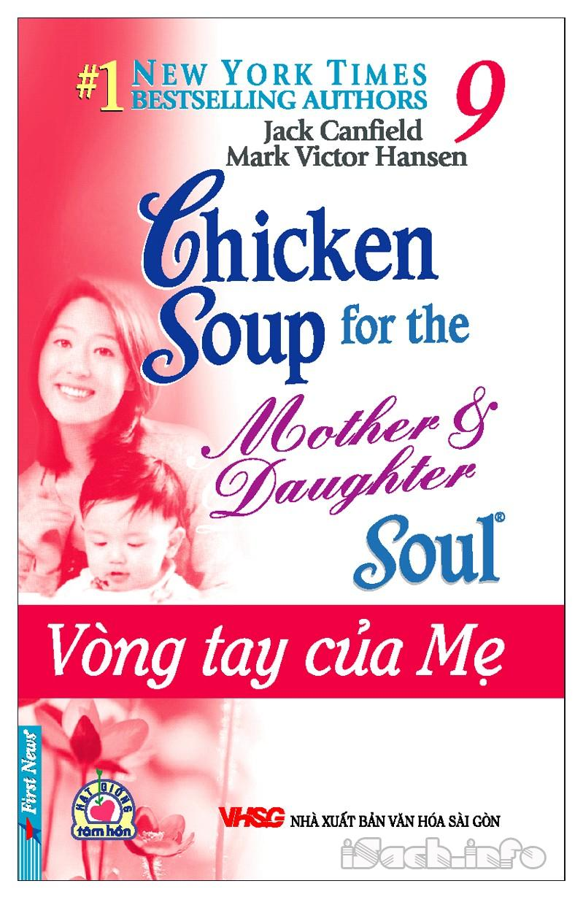

« Back
Vòng Tay Của Mẹ
By Jack Canfield & Mark V. Hansen

Cùng Bạn Đọc.
Lời Giới Thiệu.
Trở Lại Bên Nhau.
Vẫn Luôn Là Mẹ.
Người Mẹ Kém Cỏi Nhất Thế Gian.
Điều Bí Mật Dành Cho Mẹ.
Lòng Can Đảm Của Con.
Chúc Mừng Sinh Nhật, Con Yêu!.
Tạo Ra Kỷ Niệm.
Thiên Thần Cải Trang.
Bằng Tốt Nghiệp Tuổi Thơ.
Ai Sẽ Tưới Cho Những Cây Nước Mắt Của Tôi?.
Tách Cà Phê.
Lời Nói Dối Và Buổi Chiếu Phim Ban Chiều.
Người Mẹ Luôn Lắng Nghe.
Nếu Mẹ Lại Được Làm Mẹ.
Món Quà.
Cá Nhân Tiêu Biểu Trên Đường Chạy.
Bài Hát Ru Cho Mẹ.
Mẹ Nói/Có Nghĩa Là.
Hãy Ngẩng Cao Đầu.
Về Tác Giả.
Sự Ra Đời Của “Chicken Soup For The Soul”.
Chinh Phục Thế Giới.
“Chicken Soup For The Soul”.